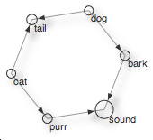

pattern.graph
The pattern.graph module has tools for graph analysis (shortest path, centrality) and graph visualization in the browser. A graph is a network of nodes connected by edges. It can be used for example to study social networks or to model semantic relationships between concepts.
It can be used by itself or with other pattern modules: web | db | en | search | vector | graph.

Documentation
Node
A Node is an element with a unique id (a string or int) in a graph. A graph is a network of nodes and edges (connections between nodes). For example, the World Wide Web (WWW) can be represented as a vast graph with websites as nodes, website URLs as node id's, and hyperlinks as edges. Graph analysis can then be used to find important nodes (i.e., popular websites) and the shortest path between them.
A Node takes a number of optional parameters used to style the graph visualization of the graph: radius (node size), text, fill and stroke (colors; each a tuple of RGBA values between 0.0-1.0), strokewidth, font, fontsize and fontweight.
node = Node(id="", **kwargs)
node.graph # Parent Graph. node.id # Unique string or int. node.links # List of Node objects. node.edges # List of Edge objects. node.edge(node, reverse=False)
node.weight # Eigenvector centrality (0.0-1.0). node.centrality # Betweenness centrality (0.0-1.0). node.degree # Degree centrality (0.0-1.0).
node.x # 2D horizontal offset. node.y # 2D vertical offset. node.force # 2D Vector, updated by Graph.layout. node.radius # Default: 5 node.fill # Default: None node.stroke # Default: (0,0,0,1) node.strokewidth # Default: 1 node.text # Text object, or None.
node.flatten(depth=1, traversable=lambda node, edge: True)
- Node.edge(node) returns the Edge from this node to the given node, or None.
- Node.flatten() returns a list with the node itself (depth=0), directly connected nodes (depth=1), nodes connected to those nodes (depth=2), and so on.
node weight and centrality
A well-known task in graph analysis is measuring how important or central each node in the graph is. The pattern.graph module has three centrality measurements, adopted from NetworkX.
Node.weight is the node's eigenvector centrality (= incoming traffic) as a value between 0.0-1.0. Nodes with more (indirect) incoming edges have a higher weight. For example, in the WWW, popular websites are those that are often linked to, where the popularity of the referring websites is taken into account.
Node.centrality is the node's betweenness centrality (= passing traffic) as a value between 0.0-1.0. Nodes that occur more frequently in paths between other nodes have a higher betweenness. They are often found at the intersection of different clusters of nodes (e.g., like a broker or a bridge).
Node.degree is the node's degree centrality (= local traffic) as a value between 0.0-1.0. Nodes with more edges have a higher degree.
Edge
An Edge is a connection between two nodes. Its weight defines the importance of the connection. Edges with a higher weight are preferred when traversing the path between two (indirectly) connected nodes.
An Edge takes optional parameters stroke (a tuple of RGBA values between 0.0-1.0) and strokewidth, which can be used to style the graph visualization.
edge = Edge(node1, node2, weight=0.0, length=1.0, type=None, **kwargs)
edge.node1 # Node (sender). edge.node2 # Node (receiver). edge.weight # Connection strength. edge.length # Length modifier for the visualization. edge.type # Useful in semantic networks. edge.stroke # Default: (0,0,0,1) edge.strokewidth # Default: 1
directed graph
An edge can be traversed in both directions: from node1 → node2, and from node2 → node1. The Graph.shortest_path() and Graph.betweenness_centrality() methods have a directed parameter which can be set to True, so that edges are only traversed from node1 → node2. This is called a directed graph. Evidently, it produces different shortest paths and node weights.
Two nodes can be connected by at most two edges (one in each direction). Otherwise, Graph.add_edge() simply returns the edge that already exists between the given nodes.
Graph
A Graph is a network of nodes connected by edges, with methods for finding paths between (indirectly) connected nodes.
graph = Graph(layout=SPRING, distance=10.0)
graph[id] # Node with given id (Graph is a subclass of dict). graph.nodes # List of Node objects. graph.edges # List of Edge objects. graph.density # < 0.35 => sparse, > 0.65 => dense graph.layout # GraphSpringLayout. graph.distance # GraphSpringLayout spacing.
graph.add_node(id) # Creates + returns new Node. graph.add_edge(id1, id2) # Creates + returns new Edge. graph.remove(node) # Removes given Node + edges. graph.remove(edge) # Removes given Edge. graph.prune(depth=0) # Removes nodes + edges if len(node.links) <= depth. graph.node(id) # Returns node with given id. graph.edge(id1, id2) # Returns edge connecting the given nodes. graph.copy(nodes=ALL) # Returns a new Graph. graph.split() # Returns a list of (unconnected) graphs.
graph.eigenvector_centrality() # Updates all Node.weight values. graph.betweenness_centrality() # Updates all Node.centrality values.
graph.shortest_path(node1, node2, heuristic=None, directed=False) graph.shortest_paths(node, heuristic=None, directed=False) graph.paths(node1, node2, length=4) graph.fringe(depth=0, traversable=lambda node, edge: True)
graph.update(iterations=10, weight=10, limit=0.5)
- Graph.add_node() takes an id + any optional parameter of Node.
- Graph.add_edge() takes two id's + any optional parameter of Edge.
Both methods have an optional base parameter that defines the subclass of Node or Edge to use.
- Graph.prune() removes all nodes with less or equal (undirected) connections than depth.
- Graph.copy() returns a new Graph from the given list of nodes.
- Graph.split() return a list of unconnected subgraphs.
- Graph.paths() returns all paths (each a list of nodes) <= length connecting two given nodes.
- Graph.shortest_path() returns a list of nodes connecting the two given nodes.
- Graph.shortest_paths() returns a dictionary of node → shortest path.
The optional heuristic function takes two node id's and returns a penalty (0.0-1.0) for traversing their edges. With directed=True, edges are only traversable in one direction.
- Graph.fringe() returns a list of leaf nodes.
With depth=0, returns the nodes with one edge.
With depth=1, returns the nodes with one edge + the connected nodes, etc.
For example:
>>> from pattern.graph import Graph
>>>
>>> g = Graph()
>>> for n1, n2 in (
>>> ('cat', 'tail'), ('cat', 'purr'), ('purr', 'sound'),
>>> ('dog', 'tail'), ('dog', 'bark'), ('bark', 'sound')):
>>> g.add_node(n1)
>>> g.add_node(n2)
>>> g.add_edge(n1, n2, weight=0.0, type='is-related-to')
>>>
>>> for n in sorted(g.nodes, key=lambda n: n.weight):
>>> print '%.2f' % n.weight, n
0.00 Node(id='cat')
0.00 Node(id='dog')
0.07 Node(id='purr')
0.07 Node(id='bark')
0.15 Node(id='tail')
1.00 Node(id='sound')
>>> for n in g.shortest_path('purr', 'bark'):
>>> print n
Node(id='purr')
Node(id='sound')
Node(id='bark')
|
When sorted by Node.weight (i.e., eigenvector centrality), sound is the most important node in the network. This can be explained by observing the visualization on the right. Most nodes (indirectly) connect to sound or tail. No nodes connect to dog or cat, so these are the least important in the network (weight 0.0). By default, nodes with a higher height will have a larger radius in the visualization. |
 |
Graph layout
A GraphLayout updates node positions (Node.x, Node.y) iteratively each time GraphLayout.update() is called. The pattern.graph module currently has one implementation: GraphSpringLayout, which uses a force-based algorithm where edges are regarded as springs. Connected nodes are pulled closer together (attraction) while other nodes are pushed further apart (repulsion).
layout = GraphSpringLayout(graph)
layout.graph # Graph owner. layout.iterations # Starts at 0, +1 each update(). layout.bounds # (x, y, width, height)-tuple.
layout.k # Force constant (4.0) layout.force # Force multiplier (0.01) layout.repulsion # Maximum repulsion radius (50)
layout.update(weight=10.0, limit=0.5) # weight = Edge.weight multiplier. layout.reset() layout.copy(graph)
Reference: Hellesoy, A. & Hoover, D. (2006). http://ajaxian.com/archives/new-javascriptcanvas-graph-library
Graph adjacency
The pattern.graph has a number of functions that can be used to modify graph edges:
unlink(graph, node1, node2=None)
redirect(graph, node1, node2)
cut(graph, node)
insert(graph, node, a, b)
- unlink() removes the edge between node1 and node2.
If only node1 is given, removes all edges to + from it. This does not remove node1 from the graph. - redirect() connects node1's edges to node2 and removes node1.
If A, B, C, D are nodes and A → B and C → D, and we redirect A to C, then C → B and C → D. - cut() removes the given node and connects the surrounding nodes.
If A, B, C, D are nodes and A → B and B → C and B → D, and we cut B, then A → C and A → D. - insert() inserts the given node between node a and node b.
If A, B, C are nodes and A → B, and we insert C, then A → C and C → B.
Edge adjacency map
The adjacency() function returns a map of linked nodes:
adjacency(graph,
directed = False,
reversed = False,
stochastic = False,
heuristic = lambda node1, node2: 0)The return value is an {id1: {id2: weight}} dictionary with Node.id's as keys, where each value is a dictionary of connected Node.id's → Edge.weight.
If directed=True, edges are only traversable in one direction. If stochastic=True, the edge weights for all neighbors of a given node sum to 1.0. The optional heuristic function takes two node id's and returns an additional cost (0.0-1.0) for traversing their edges.
Edge traversal
The bfs() function (breadth-first search) visits all nodes connected to the given node.
The dfs() function (depth-first search) visits all nodes connected to the given node depth-first, i.e., as far as possible along each path before backtracking.
bfs(node, visit=lambda node: False, traversable=lambda node, edge: True)
dfs(node, visit=lambda node: False, traversable=lambda node, edge: True)
The given visit function is called with each visited node. Traversal will stop if it returns True, and subsequently bfs() or dfs() will return True.
The given traversable function takes the visited Node and an Edge and returns True if we are allowed to follow this connection to the next node. For example, the traversable for directed edges:
>>> def directed(node, edge): >>> return node.id == edge.node1.id >>> >>> dfs(g, traversable=directed)
Visualization
The pattern.graph module has a JavaScript counterpart (graph.js) that can be used to visualize a graph in a web page, as a HTML <canvas> element. The HTML <canvas> element allows dynamic, scriptable rendering of 2D shapes and bitmap images (see also Pattern's canvas.js).
Graph.export() creates a new file folder at the given path with an index.html (the visualization), a style.css, graphs.js and canvas.js. The optional parameter javascript defines the URL path to graph.js and canvas.js (which will not be included in this case).
graph.export(path, encoding='utf-8', **kwargs)
>>> from pattern.graph import Graph
>>>
>>> g = Graph()
>>> for n1, n2 in (
>>> ('cat', 'tail'), ('cat', 'purr'), ('purr', 'sound'),
>>> ('dog', 'tail'), ('dog', 'bark'), ('bark', 'sound')):
>>> g.add_node(n1)
>>> g.add_node(n2)
>>> g.add_edge(n1, n2, weight=0.0, type='is-related-to')
>>>
>>> g.export('sound', directed=True)Nodes and edges will be styled according to their fill, stroke, and strokewidth properties.
The following parameters can be used to customize the visualization:
| Parameter | Default | Description |
| javascript | '' | Path to canvas.js and graph.js. |
| stylesheet | INLINE | Path to CSS: INLINE, DEFAULT (generates style.css), None or path. |
| title | 'Graph' | HTML <title>Graph</title>. |
| id | 'graph' | HTML <div id="graph"> contains the <canvas>. |
| ctx | 'canvas.element' | HTML <canvas> element to use for drawing. |
| width | 700 | Canvas width in pixels. |
| height | 500 | Canvas height in pixels. |
| frames | 500 | Number of frames of animation. |
| ipf | 2 | GraphLayout.update() iterations per frame. |
| directed | False | Visualize eigenvector centrality as an edge arrow? |
| weighted | False | Visualize betweenness centrality as a node shadow? |
| pack | True | Shorten leaf edges + add node weight to node radius. |
| distance | graph.distance | Average edge length. |
| k | graph.k | Force constant. |
| force | graph.force | Force dampener. |
| repulsion | graph.repulsion | Force radius. |
| href | {} | Dictionary of Node.id => URL. |
| css | {} | Dictionary of Node.id => CSS classname. |
To export a static visualization, use frames=1 and ipf=0.
Server-side scripting
Graph.serialize() returns a string with (a portion of) the HTML, CSS and JavaScript source code of the visualization. It can be used to serve a dynamic web page. With type=CANVAS, it returns a HTML string with a <div id="graph"> that contains the canvas.js animation. With type=DATA, it returns a Javascript string that initializes the Graph in variable g (which will draw to ctx).
graph.serialize(type=HTML, **kwargs) # HTML | CSS | CANVAS | DATA
>>> import cherrypy >>> >>> class Visualization(object): >>> def index(self): >>> return ( >>> '<html>' >>> '<head>' >>> '<script src="canvas.js"></script>' >>> '<script src="graph.js"></script>' >>> '</head>' >>> '<body>' + g.serialize(CANVAS, directed=True) + >>> '</body>' >>> '</html>' >>> ) >>> index.exposed = True >>> >>> cherrypy.quickstart(Visualization())
graph.js
Below is a standalone demonstration of graph.js, without using export() or canvas.js. The Graph.loop() method fires the spring layout algorithm (view live demo).

<!doctype html>
<html>
<head>
<meta charset="utf-8">
<style>
#graph { display: block; position: relative; overflow: hidden; }
#graph .node-label { font: 11px sans-serif; }
</style>
<script src="graph.js"></script>
<script>
function spring() {
SHADOW = 0.65 // slow...
g = new Graph(document.getElementById("_ctx"));
// Random nodes.
for (var i=0; i < 50; i++) {
g.addNode(i+1);
}
// Random edges.
for (var j=0; j < 75; j++) {
var n1 = choice(g.nodes);
var n2 = choice(g.nodes);
g.addEdge(n1, n2, {weight: Math.random()});
}
g.prune(0);
g.betweennessCentrality();
g.eigenvectorCentrality();
g.loop({frames:500, fps:30, ipf:2, weighted:0.5, directed:true});
}
</script>
</head>
<body onload="spring();">
<div id="graph" style="width:700px; height:500px;">
<canvas id="_ctx" width="700" height="500"></canvas>
</div>
</body>
</html>